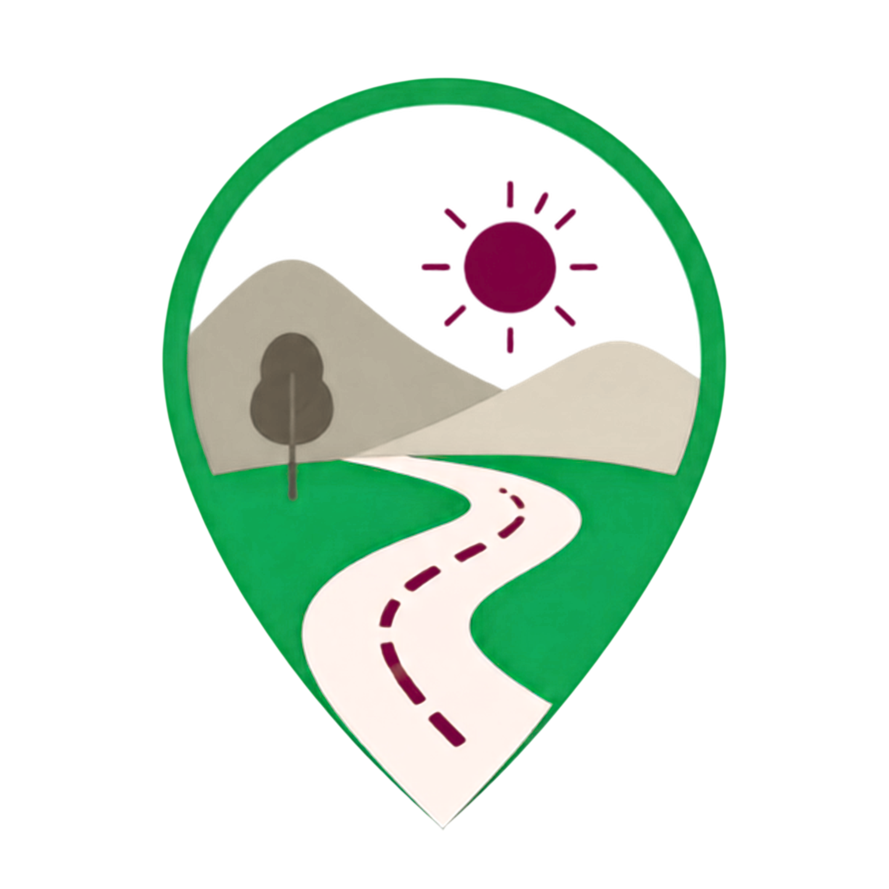

Festivales y música
Fiestas populares, espectáculos y música en vivo.

CercaníasDESCUBRÍ LO QUE TENÉS CERCAFerias, festivales, propuestas culturales y actividades deportivas de Marcos Paz.
Estamos preparando un calendario para reunir actividades municipales, ferias, festivales y propuestas de organizaciones locales.
Para evitar publicar fechas incorrectas, por ahora consultá la agenda oficial del municipio.
Consultar novedades municipales ↗La idea es ordenar actividades por fecha, zona y tipo.
Fiestas populares, espectáculos y música en vivo.
Ferias de productores, artesanos y economía local.
Muestras, talleres, cine, teatro y actividades comunitarias.
Encuentros deportivos y actividades recreativas.
El calendario todavía no recibe eventos automáticamente. La publicación y confirmación de fechas será una función a desarrollar con el backend.